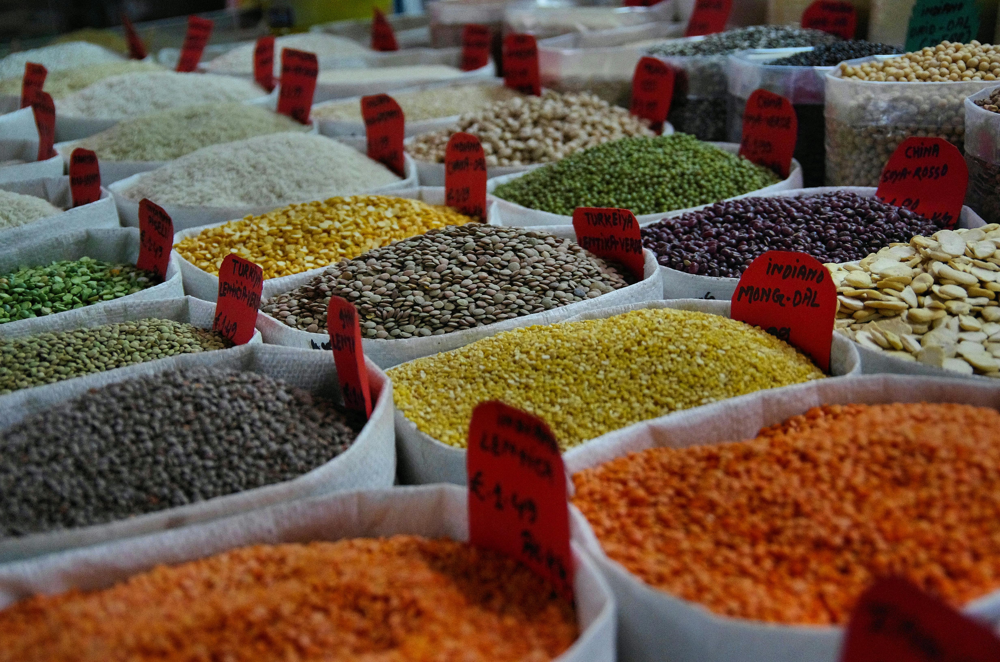

Crop Details
Major Crop Categories

Grains
Explore various grain crops and their cultivation techniques.
Fruits
Discover fruit crops and their growing requirements.
Vegetables
Learn about various vegetable crops and their cultivation methods.

Cash Crops
Explore high-value cash crops and their market potential.
Grains
Wheat
One of the most widely grown cereal grains worldwide.
- Soil Requirement: Well-drained loamy soil
- Growing Season: Cool season crop
- Harvesting: When grain is dry and hard
Rice
The primary food source for a large part of the world's population.
- Soil Requirement: Clay soil with good water retention
- Growing Season: Varies by region and variety
- Harvesting: When grains are mature and golden yellow